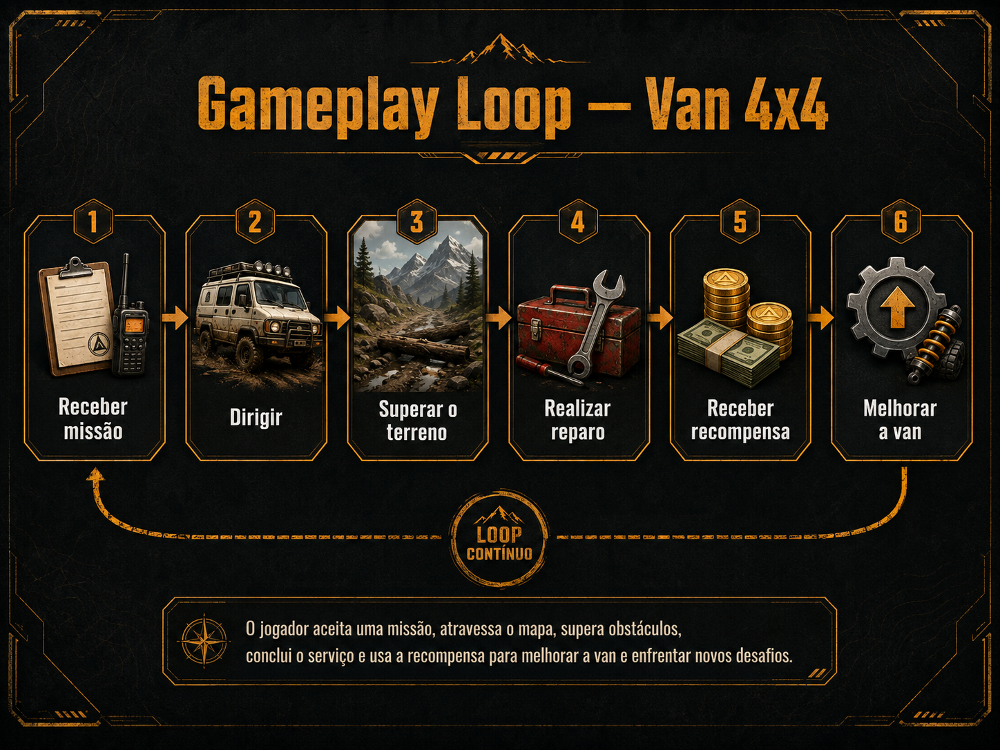
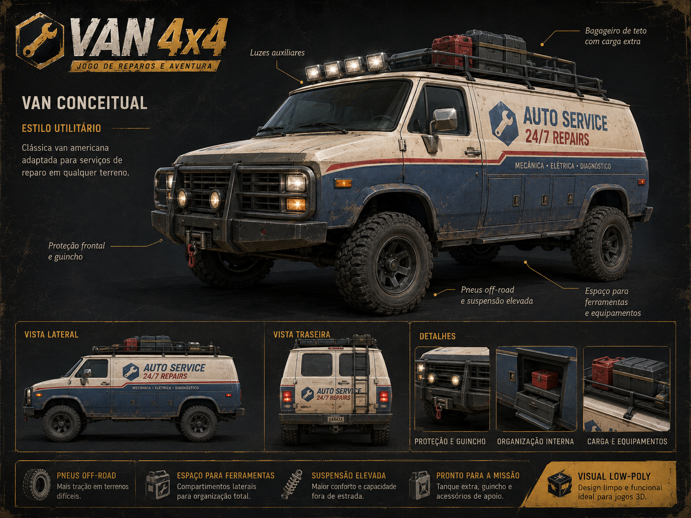
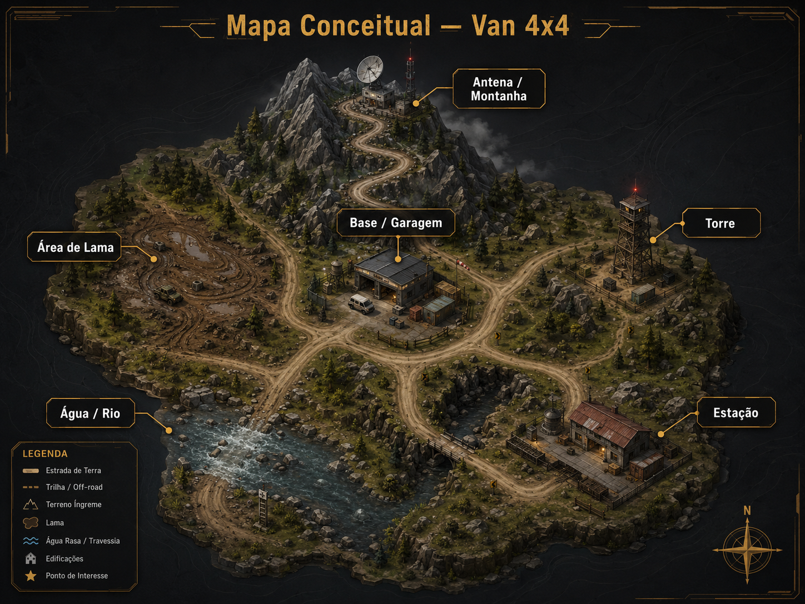

Visão Geral
Van 4x4 é um jogo 3D de direção off-road com física arcade e visual low-poly.
O jogador controla uma van praticamente indestrutível e precisa atravessar terrenos difíceis para chegar até diferentes locais e realizar pequenos serviços de manutenção.
O foco principal está na dirigibilidade exagerada, na exploração dos ambientes e nas situações inesperadas geradas pela física. A proposta não é simular de forma realista um veículo, mas criar uma experiência divertida, responsiva e fácil de entender.
Informações do Jogo
Objetivo do Jogo
O jogador deve utilizar a van para atravessar terrenos difíceis e chegar até diferentes pontos do mapa onde existem equipamentos que precisam de manutenção.
O principal desafio está no percurso. Lama, pedras, subidas, água, obstáculos e condições climáticas tornam cada deslocamento diferente.
O jogo deve ser rápido de aprender e permitir que uma pessoa comece a dirigir poucos segundos após iniciar uma partida.
Escopo da Versão Inicial
O projeto será desenvolvido individualmente. Por esse motivo, a versão inicial será planejada com um escopo reduzido e concentrado principalmente na qualidade da mecânica de direção.
Em vez de vários mapas ou fases extensas, o jogo utilizará inicialmente um único mapa principal compacto, contendo diferentes áreas e tipos de terreno.
1 Mapa Principal
Um ambiente compacto reutilizado por diferentes missões, evitando a necessidade de produzir vários mapas completos.
Poucos Pontos de Missão
Aproximadamente três ou quatro áreas principais de manutenção serão suficientes para a primeira versão.
Foco na Mecânica
A prioridade será tornar a van divertida de controlar antes de aumentar a quantidade de conteúdo.
Novos mapas, áreas e sistemas somente deverão ser considerados depois que o núcleo principal do jogo estiver funcionando de maneira satisfatória.
Gameplay
Cada missão começa com um objetivo localizado em algum ponto do mapa. O jogador deve dirigir até esse local utilizando a van e escolher como atravessar o terreno.
Durante o percurso, será necessário lidar com obstáculos, inclinações, lama, água e condições ambientais que modificam a maneira como a van se comporta.
Ao chegar ao destino, o jogador posiciona a van próximo ao equipamento e realiza uma interação simples para concluir o serviço de manutenção.
Core Gameplay Loop

A Van
A van é o principal elemento do jogo e sua dirigibilidade deve ser a principal fonte de diversão.
A referência visual principal é uma van americana clássica de serviços e manutenção, com carroceria retangular, aparência robusta e espaço para ferramentas e equipamentos.
A física será propositalmente exagerada. O veículo poderá subir terrenos muito inclinados, atravessar obstáculos, realizar saltos, derrapar e até capotar sem ser destruído.
O objetivo é criar situações em que o jogador consiga recuperar o controle mesmo depois de movimentos absurdos, mantendo a partida rápida e evitando interrupções constantes.

Física Arcade
Comportamento exagerado e divertido em vez de uma simulação automobilística realista.
Van Indestrutível
Capotamentos e impactos fazem parte da experiência e não devem encerrar imediatamente a partida.
Terreno como Desafio
O percurso e a maneira de chegar ao objetivo são parte central de cada missão.
Câmera
A câmera principal será em terceira pessoa e acompanhará a van durante toda a experiência de direção.
A versão inicial não terá um personagem controlável fora do veículo. Dessa forma, não será necessário alternar entre sistemas de câmera de direção e movimentação a pé.
Direção
A câmera ficará posicionada atrás da van, acompanhando seu movimento com suavização suficiente para manter boa leitura do terreno.
Reparos
Durante uma manutenção, a câmera poderá permanecer na posição normal ou aproximar-se do ponto de interação.
Escopo Controlado
Não haverá inicialmente sistema de movimentação a pé, câmera em primeira pessoa ou animações de entrada e saída do veículo.
Controles
Os controles serão simples para permitir que novos jogadores entendam rapidamente como jogar.
Acelerar
Frear / Ré
Direção
Freio de mão
Interagir
Reposicionar a van
Os controles ainda poderão ser modificados durante os testes de jogabilidade.
Progressão
A conclusão das missões permite ao jogador avançar para desafios maiores e melhorar a capacidade da van.
Inicialmente, a progressão poderá utilizar dinheiro obtido ao completar missões. Esse dinheiro poderá ser utilizado para comprar melhorias para o veículo ou novas ferramentas.
Possíveis melhorias
Motor
Maior força para enfrentar subidas e terrenos difíceis.
Pneus
Melhor aderência em lama e terrenos irregulares.
Suspensão
Melhor capacidade de absorver impactos e obstáculos.
Guincho
Ferramenta para ajudar em situações onde a van fica presa.
Snorkel
Permite enfrentar áreas com maior quantidade de água.
Ferramentas
Permitem realizar novos tipos de serviço e manutenção.
A quantidade de melhorias será reduzida caso seja necessário preservar o escopo e priorizar a qualidade da dirigibilidade.
Mapa e Ambientes
A primeira versão será construída em um único mapa principal compacto. O objetivo é fazer esse ambiente parecer variado através de relevo, obstáculos e diferentes tipos de terreno, sem depender de uma área extremamente grande.
O mapa será inicialmente desenvolvido como um blockout simples, utilizando formas básicas para testar distâncias, escala, caminhos e comportamento da van antes da produção visual final.

Base / Garagem
Região inicial do jogador e ponto de referência central para o restante do mapa.
Estrada de Terra
Caminho mais seguro entre algumas regiões e espaço utilizado para apresentar a dirigibilidade básica.
Montanha
Área vertical com subidas, pedras e possibilidades de atalhos fora da estrada.
Lama
Região de baixa aderência que altera o comportamento da van e dificulta a progressão.
Água
Trechos de água rasa poderão funcionar como obstáculos e rotas alternativas.
Área de Tempestade
Parte do mapa em que chuva, raios ou baixa visibilidade aumentam a dificuldade sem exigir um novo cenário.
Estrutura Simplificada
ANTENA / MONTANHA
▲
│
estrada sinuosa
│
ÁREA DE LAMA ─── BASE ─── TORRE
│ │ │
│ │ │
ÁGUA ───── ESTRADA ─ ESTAÇÃO
A imagem e o diagrama representam apenas a organização conceitual inicial. O layout definitivo será definido durante o blockout e os primeiros testes de dirigibilidade.
Missões e Reparos
As missões terão objetivos simples para manter o foco principalmente na direção e no percurso.
A versão inicial deverá utilizar poucos pontos de manutenção distribuídos pelo mesmo mapa principal.
Possíveis pontos de missão
- Antena localizada no alto da montanha
- Torre de comunicação
- Estação meteorológica
- Gerador ou instalação localizada em área de lama
Possíveis reparos
- Trocar um fusível
- Reconectar um cabo
- Substituir uma bateria
- Reiniciar um equipamento
- Reposicionar uma antena
Fluxo do Reparo
O jogador não precisará sair fisicamente da van na versão inicial. Os reparos poderão utilizar uma interação simples, uma pequena interface ou um minigame curto.
Performance e Otimização
A performance é um dos objetivos centrais do projeto e deverá ser considerada desde o início do desenvolvimento, e não apenas como uma etapa de otimização realizada no final.
A qualidade gráfica será propositalmente simples. O objetivo é priorizar jogabilidade, responsividade e altas taxas de quadros por segundo.
Hardware Modesto
O jogo deverá utilizar uma direção visual e sistemas suficientemente leves para funcionar em computadores modestos utilizando configurações reduzidas.
60 FPS
A experiência deverá buscar manter 60 FPS em hardware compatível com os requisitos definidos durante os testes.
120 / 144+ FPS
Computadores mais potentes deverão poder aproveitar monitores de alta taxa de atualização, sem que o jogo fique artificialmente limitado a 60 FPS.
Diretrizes de Performance
- Modelos 3D low-poly
- Materiais e shaders simples sempre que possível
- Texturas pequenas e reutilizáveis
- Quantidade controlada de luzes e sombras dinâmicas
- Vegetação e objetos de cenário com baixo custo de renderização
- Uso limitado de partículas e efeitos gráficos pesados
- Evitar simulações físicas desnecessariamente complexas
- Mapa compacto em vez de um mundo aberto muito extenso
- Configurações gráficas ajustáveis
- Gameplay independente da taxa de quadros
Os requisitos mínimos e metas numéricas definitivas serão estabelecidos somente depois dos primeiros testes em diferentes computadores.
Equipe
Luciano Ludwig Heling
Desenvolvimento individual do projeto.
Funções: Game Design, Programação, Level Design, Arte 3D, Testes, Documentação e Gerenciamento do Projeto.
Tecnologias
Godot 4
Engine principal utilizada para desenvolver o jogo, trabalhar com cenas, física, renderização, interface, áudio e demais sistemas.
GDScript
Linguagem principal utilizada para implementar as mecânicas e sistemas do jogo.
Visual Studio Code
Editor utilizado principalmente para programação e edição dos arquivos do projeto.
Git e GitHub
Utilizados para versionamento, documentação, acompanhamento do desenvolvimento e gerenciamento das tarefas.
GitHub Desktop
Interface utilizada para realizar as operações de versionamento durante o desenvolvimento.
Blender
Utilizado para criação ou edição dos modelos 3D necessários para o jogo.
HTML e CSS
Utilizados para desenvolver este Game Design Document, permitindo que ele seja armazenado e versionado junto com o restante do projeto.